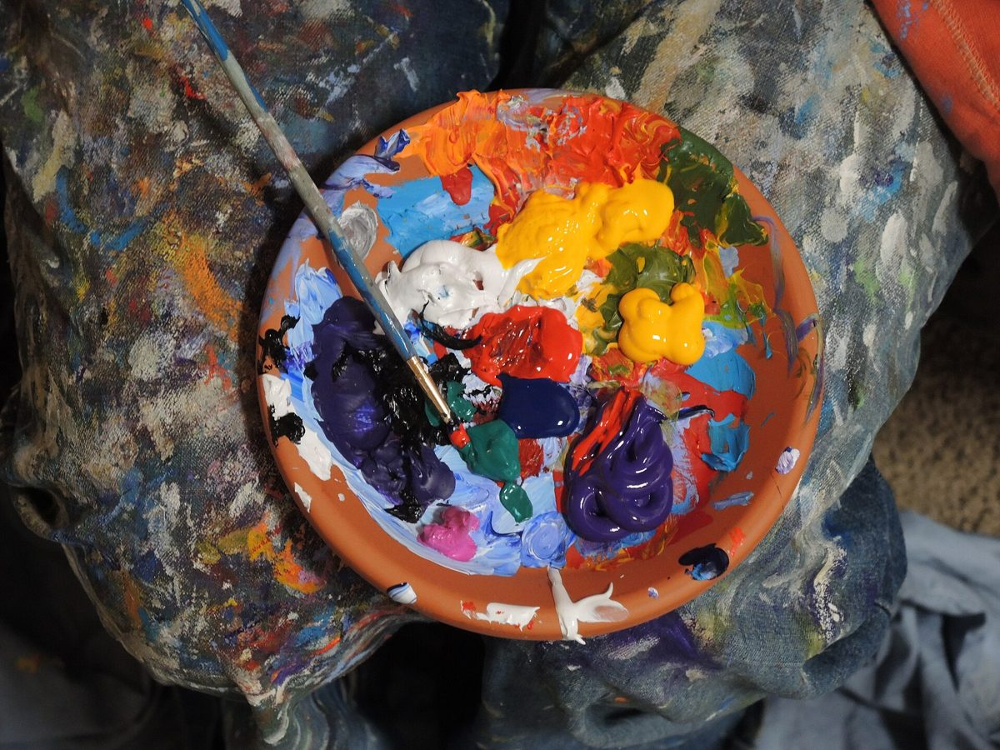
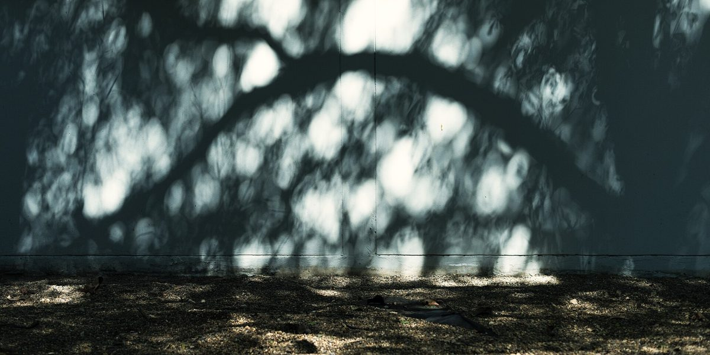

店のこと
店のこと
お店について確認できているのは、所在地とInstagramのアカウントだけです。
「想像してみる」部分は、制作側が想像して書いたものです。お店の実際の様子・考え・メニューとは関係がありません。
確認できていること
- 店名は「Blue Door (R-16)」、業種はカフェ
- 所在地は和歌山県西牟婁郡白浜町3003-12(〒649-2211)
- 電話番号はなし。連絡はInstagramから
- 営業時間・定休日・メニュー・価格・ご予約・駐車場は準備中

想像してみる
「青い扉」という名前から
由来は分かりません。制作側は、扉をあけると少し肩の力が抜けるような場所かもしれない、と想像しました。たとえば散歩の途中で扉をあけて、温かい飲み物でひと息つく。そんな時間を思い浮かべています(実際のお店の姿ではありません)。



町のこと
白浜町について
お店の所在地は和歌山県西牟婁郡白浜町です。お店の雰囲気や提供内容は、確認できたものだけを載せるため「準備中」としています。